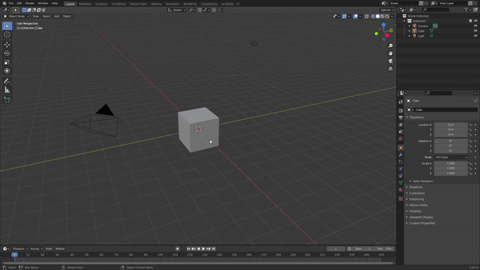

Getting Started
Installation and Loading the PBR Painter Workspace
When you purchase PBR Painter, you will have access to the .zip file that contains the entire addon package.
This can be installed in Blender using the normal approach: 
Updating to New Versions
If you already have an old version of PBR Painter installed, and wish to update to a new version, please follow the following steps:
Setting up the Asset Browser (Blender 3.x and 4.x Only)
If you are using Blender 3, it is recommended that you choose an asset directory, within the addon preferences. This will create a new filepath to tell Blender where you're PBR Painter assets will be stored.
Important Considerations (PLEASE READ)
There are a few things to consider before getting started as these will have a considerable impact on your experience with PBR Painter:
-
PBR Painter generates complex node groups associated with each layer. These are created, modified, connected and deleted using the various tools within the addon, so you never actually need to even look at the node tree. It is important to NOT delete any of the node groups created by PBR Painter as this could cause issues with the addon. Deleting nodes within a node group may break the addon entirely.
-
There is a limit on the number of image texture nodes that can be represented using Eevee (and also for Cycles, but it is much higher). If you reach this limit by adding many PBR layers, your material will turn solid pink. If this happens, there are two potential options going forward: Option one is to hide one or more lower layers while you work on new layers. Option two is to take advantage of the Merge Visible tool (discussed more in the following sections), which will merge all of the currently visible active layers into a single layer.